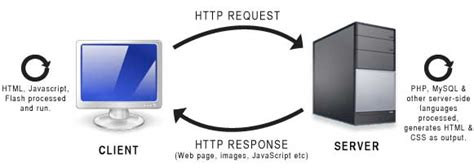
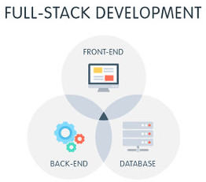

As tecnologias para desenvolver sites são HTML, CSS e JS; sendo
Para enviar as informações de uma maquina para outra se utiliza o protocolo TCP/IP, sendo:
Paginas Web e Web Site, diferença
O Server-Side é a programação do site na parte do servidor como exemplo o Java e MySQL
O Client-Side é a programação que aparece e fica para o cliente como exemplo o HTML, CSS e JS
Existem três perfil, Front-End, Back-End e FullStack, sendo eles:
Front-End : é o profissional que programa na parte visual do cliente, o estilista
Back-End : é o profissional que programa na parte que o cliente não vê, programa a logica
FullStack é o profissional que é tanto Front quanto Back-End
HTML - Hypertext Markup Language
É uma linguagem de marcação de hipertexto baseada em tags criada na década de 1990 por Tim Berners-Lee para publicação de conteúdo em hipertexto, tais como, texto, imagem, áudio e vídeo, e que podem ser vinculados através de hiperlinks
Tags
Sintaxe: <nome_tag> conteúdo </nome_tag>
Sintaxe: <nome_tag atributo="valor"> conteúdo </nome_tag>
Estrutura básica do HTML
O texto deve ser feito no body enquanto as informação da pagina deve ser feitas no head, para melhorar a estrutura do site você utiliza as tags, as mais simples são: P, H1 e BR.
A "p" é para parágrafos, a "H1" é para títulos, sempre que quiser colocar um subtitulo se aumenta o numero após o "H", como por exemplo "H2", já o "br" é para quebra de linha
Marcação para formatação de texto
As tags para a formatação de texto definem destaque, tamanho de fonte, cor e outras coisas mais
Sintaxe: <BIG> texto </BIG> e <font color="blue" size="14"> texto </font>
Gustavo Henrique Pulner
Técnico em Informática
3º Info - vespertino
Irati - PR Rua Pedro Koppe Bairro São João Nº 100 Cep 84507-302
Número (42) 2104-0200